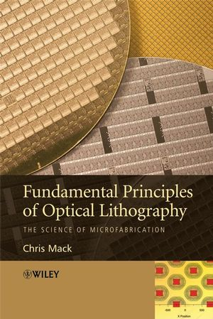

Now Available!
For more information, or to buy online, go to: www.wiley.com/WileyCDA/WileyTitle/productCd-0470727306,descCd-buy.html. (Note that both hardback and paperback editions are available.)
Free Laboratory Manual to accompany the textbook
ISBN: 978-0-470-01893-4
Published November, 2007
Statistics: 515 pages, 272 figures, 132 homework problems, 972 numbered equations
From the back cover of the book:
Microlithography is the main technical driving force behind one of the most important phenomenon in the history of technology – microelectronics and the incredible shrinking transistor. Popularly known as Moore’s Law, these dramatic increases in electronic functionality per unit cost each year for nearly five decades have transformed society. The gating piece of technology in this marvel of manufacturing progress has always been the process of lithography – the photochemical printing of circuit patterns onto semiconductor wafers.
This text attempts a difficult task – to capture the fundamental principles of the incredibly fast-changing field of semiconductor microlithography in such a way that these principles may be effectively applied to past, present and future microfabrication technology generations. Its focus is on the underlying scientific principles of optical lithography, rather than its practice. It will serve equally well as a university textbook (each chapter has an extensive set of problems) and as an industry resource.
Much of the material contained in this book is, of course, a tutorial review of the published literature on lithography and related sciences, but a significant portion is new work, never before having been published. There is no other single book that covers the wide breadth of scientific disciplines needed in the practice of optical microlithography. The major topics covered within this text are optics (imaging and thin film interference effects), photoresist chemistry (chemical reactions, diffusion, and development phenomenon), lithography as a manufacturing process (process control, critical dimension control, and overlay), and resolution enhancement technologies.